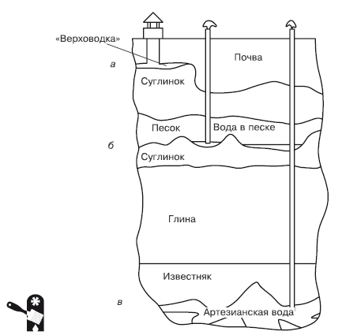

Водоносные горизонты.

Водоносным называется горизонт, насыщенный водой и находящийся между двумя водоупорными пластами (Рис. 1.1). Воду для участка и дома можно добывать с трех водоносных горизонтов:
? первый водоносный горизонт (ближайший к поверхности – «верховодка») располагается на глубине до 25 м (бывает и больше, глубина его залегания зависит от конкретной местности: возрастает с севера на юг – в северных регионах вода ближе к поверхности, в южных – глубже);
? второй водоносный горизонт (межпластовые грунтовые (напорные и ненапорные) воды) обычно располагается на глубине от 40 до 90 м;
? третий водоносный горизонт (артезианские воды) располагается на глубине от 110 до 120 м.
Проще всего использовать первый водоносный горизонт – он не требует бурения глубоких скважин, колодец для такого горизонта можно соорудить без применения техники, используя всего лишь лопату. Однако первый водоносный горизонт имеет ряд недостатков, которые препятствуют его полноценному использованию в качестве источника воды для загородного дома.

Рис. 1.1.Водоносные горизонты: а – первый водоносный горизонт («верховодка»); б – второй водоносный горизонт (межпластовые грунтовые воды); в – третий водоносный горизонт (артезианские воды)
В первую очередь проблему представляет качество воды на первом водоносном горизонте. Фактически «верховодка» – это поверхностные инфильтрационные воды, то есть воды, которые просачиваются вглубь с поверхности («крышей» первого водного горизонта являются рыхлые породы) и, соответственно, имеют разнообразные примеси, в том числе органические. В «верховодку» попадают и удобрения, которые используются на участке, причем даже если ваш участок абсолютно стерилен, то вам «помогут» соседи. Очистка же «верховодки» до требуемых СанПиН показателей обходится очень дорого и является нерентабельной.
Еще один неприятный нюанс – малый и непостоянный дебит водоисточника, расположенного на первом водоносном горизонте.

Примечание
Дебит водоисточника (водной скважины, колодца и т. д.) – характеристика водоисточника, определяющая его способность наполняться водой при заданном режиме эксплуатации. Это объем воды, поступающий в скважину из источника в единицу времени, обычно определяется в литрах или кубических метрах в час или сутки. Дебит скважины зависит от того, каким образом она связана с водоносными слоями, от характеристик этих слоев и для грунтовых вод – от сезонных колебаний.
Дебит водоисточника в «верховодке» зависит от времени года, среднесуточной температуры, количества осадков и т. д. В засушливое и холодное время года запасы воды в «верховодке» могут полностью иссякнуть.
Кроме того, у скважин на первый водоносный горизонт небольшой срок службы – обычно всего несколько лет (из-за малого запаса воды в «верховодке»). Так что, если вас соблазнит низкая стоимость устройства скважины на первый водоносный горизонт, то в скором времени вы обнаружите, что вам приходится платить весьма немаленькие деньги, чтобы сделать эту воду пригодной для бытового использования, да еще при этих расходах вы не сможете рассчитывать на стабильное бесперебойное водоснабжение.
Чаще всего первый водоносный горизонт используется для сооружения колодцев, вода из которых предназначена исключительно для хозяйственных нужд (например, для полива растений).

Внимание
Если вы, приобретая участок под застройку, считаете, что определять глубину залегания вод излишне, так как вы все равно будете обустраивать колодец на первом водоносном горизонте, то вам следует учесть: первый водоносный горизонт может оказаться на значительной глубине, что потребует соответствующих расходов на устройство колодца, кроме того, дебит водоисточника может оказаться удручающе низким. Так что прежде, чем платить деньги за участок, лучше все же провести соответствующие изыскательские работы, чтобы потом не переплачивать за устройство системы водоснабжения.
Второй водоносный горизонт защищен от загрязнения инфильтрационными поверхностными водами верхним водоупорным слоем. Только изредка попадаются участки, на которых межпластовые воды соединяются с поверхностью. Поэтому в основном качество воды второго водоносного горизонта достаточно высокое, и, хотя эта вода требует очистки, может быть использована не только для хозяйственных, но и для бытовых нужд. Дебит такого водоисточника постоянен (в отличие от «верховодки»), хотя не всегда может обеспечить необходимый объем водопотребления – все зависит от требуемого уровня водопотребления и дебита конкретного водоисточника (например, в случае большой семьи воды требуется довольно много даже при ограниченных потребностях: вода для питья, мытья посуды, стирки, умывания).
Лучшей считается вода третьего водоносного горизонта – артезианская. Артезианские воды не соединяются с поверхностью, от проникновения инфильтрационных вод они полностью защищены водоупорными слоями, а область питания обычно весьма удаленная – от нескольких километров до нескольких сотен километров. Чаще всего верхний водоупорный слой представляет собой твердые породы, и добраться до артезианских вод не так уж просто. Качество артезианских вод в большинстве случаев полностью соответствует требованиям СанПиН, и такие скважины имеют самый большой срок эксплуатации (до полувека) при стабильном дебите водоисточника. Следует заметить, что дебит водоисточника в случае использования третьего водоносного горизонта самый большой.
Казалось бы, все очевидно: несмотря на то что устройство скважины на третий водоносный горизонт обходится дороже всего, именно такая скважина является наиболее рентабельной в эксплуатации, обеспечивает необходимое количество воды, причем самого высокого качества. Однако не все так просто. Имеется еще и законодательный аспект.